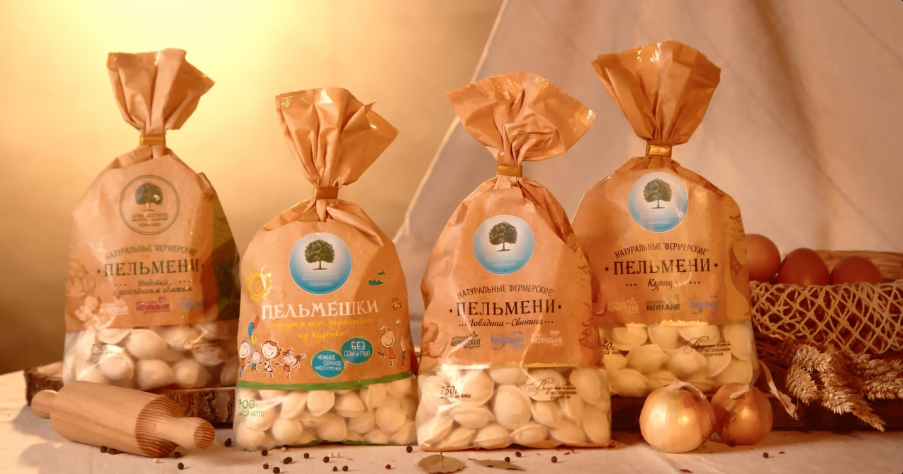
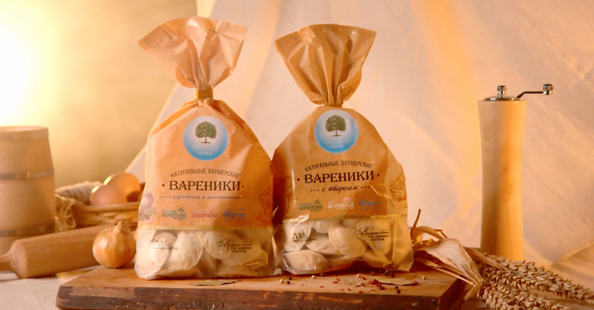
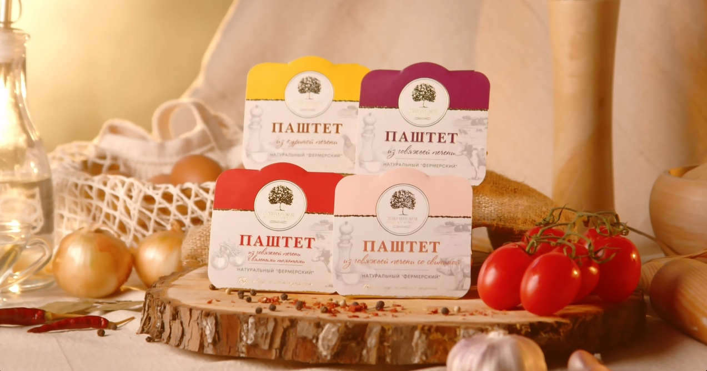
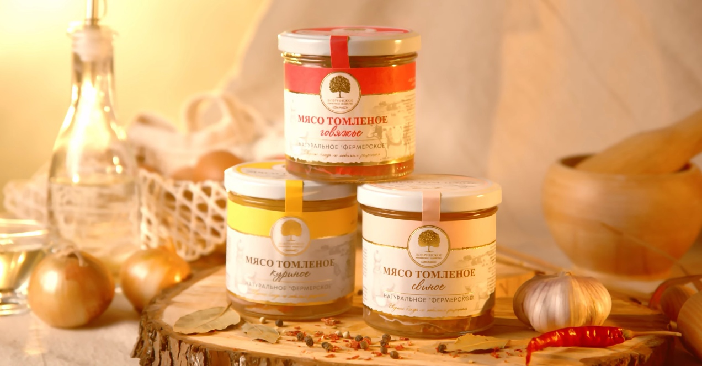

Примеры предлагаемых продуктов
| Изображение |
Название продукта |
Описание |
|  |
Пельмени |
Попробуйте наши фермерские пельмени, наполненные только натуральными ингредиентами,которые подарят вам вкус деревенской кухни. Ощутите настоящий вкус и тепло домашней еды с нашими фермерскими пельменями. |
|  |
Вареники |
Откройте для себя наши фермерские вареники, где нежное тесто обнимает ароматные начинки, приготовленные из отборных фермерских продуктов. Погрузитесь в атмосферу деревенской традиции, наслаждаясь каждым укусом наших вареников, созданных с любовью и вниманием к каждой детали. |
|  |
Паштет |
Попробуйте наш фермерский паштет, чтобы полакомиться богатством вкуса и насладиться неповторимым сочетанием натуральных продуктов. Ощутите истинное удовольствие от деревенской гастрономии в каждой ложке этого великолепного паштета. |
|  |
Томлёное мясо |
Попробуйте наше фермерское томлёное мясо, чтобы окунуться в изысканный вкус и насладиться богатством природных вкусов. Сочетание высококачественного мяса и длительного томления придаст вашему столу неповторимый шарм деревенской кухни. |